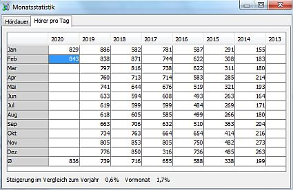

Die Monatsstatistik zeigt einige statistische Werte für sämtliche Monate seit Start der Station an:
Für beide Statstiken werden nur Einschaltvorgänge von mindestens einer Minute Dauer berücksichtigt. Die Zahl der Hörer pro Tag ergibt sich aus eindeutigen User-Agent/IP-Kombinationen.
Um die Monatsstatistik aufzurufen wähle im Menü .
Die Darstellung erfolgt auf zwei verschiedenen Reitern. Die Werte werden jeweils tabellarisch nach Monat und Jahr dargestellt. Wenn Du eine Zelle auswählst wird unten angezeigt wie sich die Zahl im Vergleich zum vorherigen Monat und im Vergleich zum gleichen Monat im vorherigen Jahr entwickelt hat.